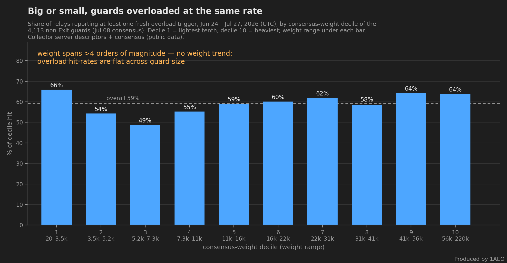

The Blast Radius: The 13% Snapshot Hid Nearly Half the Network
The number everyone quotes about the June–July circuit-building DoS is the daily snapshot: the count of relays reporting overload on the worst day. That peak is now 1,330 relays on July 21 — 12.87% of the network, the campaign's all-time high, ahead of July 12's 1,265 (12.31%). The number is real, but it measures the wrong thing. The flood rotates, and a snapshot only counts who is being hit today.
Count everyone the flood has touched instead. Over June 24 – July 27, 4,559 distinct relays reported a fresh overload trigger — 45.8% of the July 08 consensus (9,961 relays), and 57.2% of all Guard relays (2,984 of 5,213). The cumulative blast radius is 3.4x the worst snapshot. When this post first ran its window ended July 13 and the answer was a third of the network; two more weeks of the same campaign took it to nearly half.
![Chart comparing cumulative versus snapshot overload counts on the Tor network, June 24 to July 27 2026. The daily-snapshot series of relays reporting overload peaks at 1,330 relays on July 21, which is 12.87% of the network and the campaign all-time high, then falls back over the following six days to 721 relays, 7.07%, on July 27. The cumulative series of distinct relays ever freshly triggered climbs to 4,559 relays by July 27, which is 45.8% of the 9,961-relay July 08 consensus, 57.2% of all 5,213 Guards, and 3.4 times the worst single day. A shaded reference band shows that a matched 20-day pre-attack window accumulates only about 695 to 762 distinct relays, 7.0 to 7.6%, from ordinary churn.](images/circuit-building-dos-wave-june-2026-chart-blastradius.png)
Cumulative counts always grow, so the fair question is: how much of that is ordinary churn? We measured it on matched windows. A 20-day window before the attack accumulates roughly 695–762 distinct relays (7.0–7.6%) with fresh overload triggers — and that baseline is conservative, since it already contains June activity. The equivalent 20-day attack window, June 24 – July 13, reached 3,353 relays, 4.4x to 4.8x the churn baseline. Extending to July 27 adds a further 1,206 relays that had never triggered before.
Rotation, Not Pinning #
The gap between 13% and 46% exists because the flood moves. Across the first 20 days of the window, 53% of the relays ever hit triggered on only one of those days, and only 96 triggered on 10 or more. A relay hit today has roughly a one-in-three chance of a fresh trigger the next day. The largest single day of fresh triggers in the whole window came after the peak — 728 relays on July 24, though only 120 of those were new to the running total. The pressure sweeps across the relay population rather than parking on a fixed set, so on any given day most of the relays it has already touched look healthy again.
Big or Small, Same Odds #
Who gets swept up? Essentially everyone, at the same rate. Among the 4,113 non-Exit guards of the July 08 consensus, the share hit at least once over the full June 24 – July 27 window sits roughly between 49% and 66% in every consensus-weight decile — non-monotonic, with no size trend, across a weight span of more than four orders of magnitude. The heaviest guards in the consensus were hit at about the same rate as the lightest.

This weight-independence has a direct consequence for fleet operators. A fleet built as many low-weight guards — like 1AEO's — gets swept through rather than concentrated on: each relay carries the same per-relay odds as a heavyweight, but no single relay absorbs a disproportionate share. It is also consistent with the rotation behavior we observed inside our own fleet in the anatomy post.
What This Means for Reading “Overloaded” Dashboards #
Any dashboard built on a daily overload count understates this attack's reach by more than a factor of three. A relay that looks fine today may have been hit last week. Snapshot metrics answer “how bad is it right now?” For a rotating flood, the question that matters is “how much of the network has this touched?” — and through July 27, the answer is nearly half the network and well over half of its Guards.
In the six days since the July 21 peak the snapshot has fallen by nearly half, to 721 relays (7.07%) on July 27 — the lowest since July 17. Easing is not ending: on our own relays the original circuit-rejection mode was still running through July 28, the last complete day of our telemetry, and a cumulative count only ever goes up.
How We Measured #
All numbers in this post come from Tor's public CollecTor archives and are reproducible by anyone. We count overload-general lines in relay server descriptors, deduplicated by the line's internal timestamp — a trigger persists in descriptors for about 72 hours, so counting raw lines would overcount. The daily-snapshot series uses descriptors published that day, and its percentages are shares of the relays publishing a descriptor that day (about 10,200–10,300). Cumulative, churn-baseline and decile percentages are stated against the July 08 consensus (9,961 relays; 5,213 Guards; 4,113 non-Exit guards).
Two method notes. The June archive is required even for a July-only question: descriptors published in June carry internal trigger stamps from June 24–30, and omitting them under-counts the cumulative total by several hundred relays. And the most recent day of an archive is always incomplete, so the series stops at July 27. The first version of this post reported 3,320 relays (33.3%, 44.6% of Guards) for the June 24 – July 13 window; re-parsing the finalized archive gives 3,353 (33.7%, 45.0%) — about 1% of archive settling, with the method otherwise reproducing exactly.
Related reading: The Tor Network Is Under a Circuit-Building DoS Wave — the network-wide view from Tor's public data, including the 12.87% peak in context. Anatomy of the Attack — the waves, the rotation mechanics, and how each vector works.